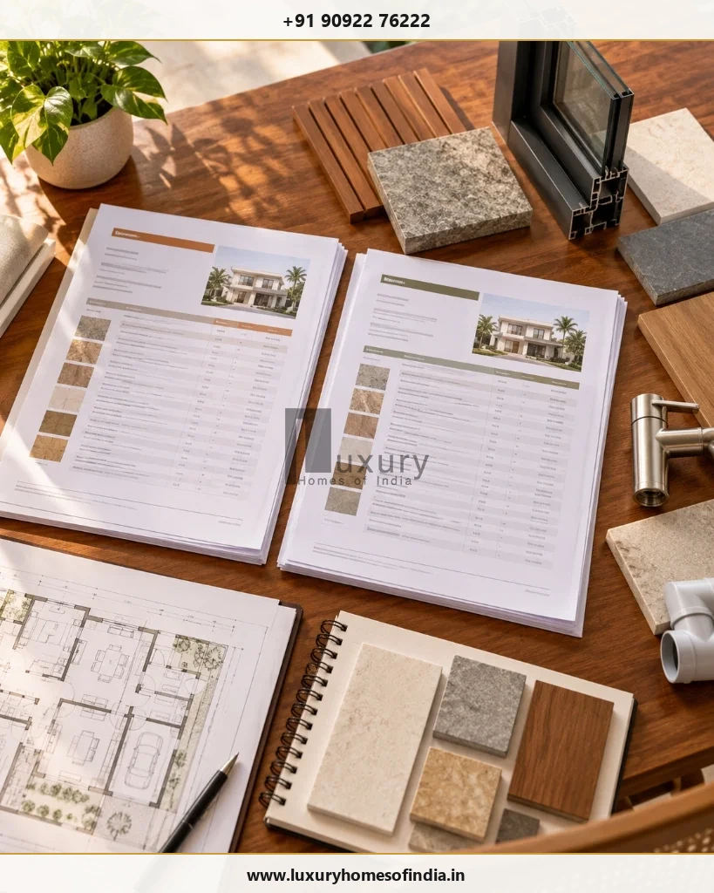

Choosing a home builder in Chennai requires more than comparing construction rates or looking at attractive villa photographs. You should evaluate relevant project experience, engineering capabilities, material specifications, quotation transparency, project management, approval responsibilities and the construction agreement before making a decision.
Start by defining your property requirements and asking every shortlisted builder to quote against the same scope. Inspect completed projects, verify who will supervise construction, understand how quality checks are documented and link payments to clearly defined milestones. Review exclusions, variations, delays and post-handover responsibilities in writing.
For an independent house or luxury villa, the best-fit builder is the one whose demonstrated capabilities, proposed scope, communication process and contractual commitments match your project. A lower price alone does not establish better value. This guide explains 15 practical checks, the documents to request and the warning signs to consider before appointing a residential construction company in Chennai.
Executive Summary: The 5 Golden Rules of Builder Selection
- 1. Scope Equivalence First: Never compare square-foot rates in isolation. A ₹2,500/sq. ft. quote with exclusions is often more expensive than a comprehensive ₹3,200/sq. ft. proposal.
- 2. Verify Active Job Sites: Inspect unannounced or permitted active construction sites to observe material storage, column shuttering quality, and civil engineer supervision.
- 3. Audit In-House Engineering: Confirm who prepares and stamps structural drawings, how foundation depths respond to local Chennai soil, and who coordinates MEP services.
- 4. Milestone Verification: Pay strictly against verified physical milestones and lab-certified cube tests—never on arbitrary calendar schedules or bulk advances.
- 5. Use an Objective Scorecard: Apply a weighted evaluation scorecard (from past projects to contract transparency) rather than being swayed by charismatic sales pitches.
1. Define your home construction requirements
Before requesting quotations, prepare a brief describing the home you want to build. This gives each company a consistent basis for its proposal and helps identify gaps before costs are committed.
Your brief should include:
- Property Details: Plot location, dimensional boundaries, road access width, orientation, and known ground or water-table constraints.
- Home Typology: Independent duplex, contemporary bespoke villa, multi-generational residence, or stilt-plus-two format.
- Construction Scope: Approximate target built-up area (BUA), number of bedrooms, parking requirements, and functional spaces.
- Architectural Priorities: Preferred style (modern tropical, contemporary brutalist, or classic Chettinad-inspired), double-height volumes, and natural ventilation.
- Interior Expectations: Level of interior execution required (flooring varieties, modular kitchen, bespoke wardrobes, false ceilings, and architectural lighting).
- Building Services: 3-phase electrical loads, solar power provisions, HVAC ducted routing, water filtration, and home lift provisions.
- Budget Parameters: Realistic target budget range, contingency allowances, and items to be phased post-handover.
- Timing & Milestones: Intended groundbreaking date and target move-in window, taking into account CMDA/GCC sanction timelines.
Strategy: You do not need to finalise every fixture or finish at the first meeting. However, the more consistently you define the scope, the easier it becomes to compare competing proposals on an apples-to-apples basis.
2. Verify relevant completed projects
Years in business are only one indicator of experience. More importantly, determine whether the builder has delivered homes comparable to yours in scale, structural complexity and finishing standard.
Ask to see completed independent houses or luxury villas in Chennai and, where possible, speak with previous clients who have agreed to provide a reference.
Examine the details that matter to your proposed residence: cantilevered staircases, window system alignment, bathroom waterproofing, door joinery, stone cladding junctions, and the neat coordination of concealed services. Do not assume that a company featured in a project's photographs was responsible for every aspect of its design or construction; ask which specific packages it actually delivered.
3. Visit completed and ongoing sites
Photographs can demonstrate design intent, but they rarely reveal every aspect of construction quality. A permitted site visit provides a far more truthful view of workmanship and site organisation.
At a completed home, look for consistent paint finishes, properly aligned doors and windows, neat silicone joints, absence of dampness on skirtings, and unresolved defects. At an active site, observe material storage (is cement elevated off the floor? is TMT steel sheltered from rain?), general housekeeping, safety gear, and the active presence of qualified supervisory engineers.
Ask the builder whether formal inspection registers are maintained on site and whether important structural stages can be reviewed before concrete pours permanently cover them.
4. Check engineering and design coordination
Ask who will take statutory responsibility for architecture, structural engineering, foundation design, plumbing, electrical coordination and Good for Construction (GFC) drawings.
For your particular property, establish how the technical team will assess soil conditions (e.g., deep marine sand in ECR vs clayey silt in OMR), neighbouring structures, access limitations, and municipal setbacks under TNCDBR 2019.
Request clarity on professional qualifications, required geotechnical investigations, revision cycles, and the process for resolving clashes between architectural plans and structural frames before casting slabs.
5. Compare detailed quotations, not just square-foot rates
A quoted rate per square foot can be a useful starting point, but it does not tell you whether two builders are pricing the same scope of work.

| Evaluation Item | What to Scrutinize & Compare Side-by-Side |
|---|---|
| Measurement Basis | How is built-up area measured? Are balconies, open terraces, covered car porches, and staircases measured at 100%, 50%, or excluded? |
| Civil & Structural Work | Excavation depth, concrete design grades (M25 ready-mix vs site-mixed), rebar grades (Fe 550D), brick types, and waterproofing systems. |
| Material Specifications | Explicit brands, grades, models, and unit allowances (e.g., tile allowance per sq ft, door hardware lump sums). |
| Finishes & Joinery | Teak wood frame thickness, solid wood vs flush doors, UPVC window brands, paint coat counts, and staircase cladding. |
| Building Services (MEP) | Wire brands (FRLS copper), switchgear series (Legrand/Schneider), pipe pressure classes (CPVC SDR 11), and sanitaryware collections. |
| Design & Engineering | Are architectural working drawings, 3D elevations, structural stability certificates, and MEP layouts included in the fee? |
| External Works | Are compound walls, designer main gate, driveway pavers, rainwater harvesting pits, and borewell connections included? |
| Commercial & Tax Terms | Is GST (18%) included in the headline rate? How are price escalation clauses, electricity deposits, and municipal sanction fees handled? |
| Variations & Extras | What written procedure and pre-agreed unit rates govern client-requested design changes during construction? |
6. Review material specifications
Descriptions such as “premium materials” or “standard quality” are legally unenforceable in a construction dispute.
Request a comprehensive, written specification schedule covering primary cement brands (UltraTech / Coromandel), TMT rebar (Tata Tiscon / JSW Neosteel), masonry blocks, waterproofing membranes, flooring allowances, window systems, and sanitary fittings.
Establish clear rules for material substitutions: require written homeowner sign-off before substituting any unavailable product, along with manufacturer data sheets and appropriate cost credits if the replacement is priced lower.
7. Understand the project management process
Construction involves multiple trade crews and interdependent tasks. Poor on-site coordination causes costly rework, clashing utility lines, and frustrating project delays.
Ask the builder for their standard sequence of work, the specific qualification of the on-site engineer (B.E. Civil vs untrained supervisor), and the tools used to track project milestones. Clarify your reporting frequency: demand weekly written progress summaries, digital photo logs, and milestone inspection hold-points.
8. Ask for a realistic construction schedule
A credible schedule should be based on your home's structural complexity, ground conditions, approval lead times, and resource availability.
Request a written baseline Gantt chart identifying key milestones (excavation, plinth, ground floor slab, first floor slab, plastering, services rough-in, finishes, and snagging). Be wary of builders who promise completion in unrealistic timeframes (such as building a bespoke 6,000 sq ft luxury villa in 6 months), which inevitably results in compromised curing periods and rushed waterproofing.
9. Review the construction agreement
A quotation is an estimate; a construction agreement is a legally binding contract. Before signing, ensure the contract comprehensively addresses:
- The frozen Good for Construction (GFC) drawings and technical specifications attached as schedules.
- The exact contract price, tax liability (GST), and explicit pricing adjustment rules.
- Milestone payment disbursements linked to verifiable physical stage completion.
- Liquidated damages clauses for unexcused contractor delays.
- Mandatory written Change Orders for any design or specification modification.
- Formal inspection hold-points and independent testing protocols.
- Contractor All Risk (CAR) insurance and worker compensation coverage.
- A minimum 12-month Defect Liability Period (DLP) post-handover.
- Clear dispute resolution, arbitration, and local Chennai court jurisdiction.
10. Examine the quality-control process
Quality assurance should be demonstrated through repeatable engineering tests rather than oral assurances:
- Pre-Pour Inspections: Reinforcement rebar cover blocks, lap lengths, beam-column junctions, and shuttering stability inspected before concrete placement.
- Concrete Testing: Slump cone tests on fresh concrete and 7-day and 28-day compressive cube testing conducted by accredited laboratories.
- Waterproofing Ponding: Minimum 48 to 72 hours continuous water retention testing on sunken bathroom slabs, balconies, and flat roof terraces.
- Concealed Services Testing: Hydrostatic pressure testing of plumbing piping networks and electrical megger/continuity insulation tests.
11. Verify approvals and documentation responsibilities in Chennai
Building approval procedures depend on whether your plot falls under the Greater Chennai Corporation (GCC), Chennai Metropolitan Development Authority (CMDA), or Directorate of Town and Country Planning (DTCP).
Confirm which registered professional (Licensed Surveyor / Registered Architect) will prepare the municipal drawings, who will submit files on Tamil Nadu's Online Single Window Portal, who liaises with local ward officers, and which statutory infrastructure and scrutiny fees are included versus owner-paid. Consult official Greater Chennai Corporation Town Planning guidelines to verify zoning and setback rules.
12. Understand payment milestones and financial controls
A transparent payment schedule protects both parties by ensuring cash outflows match physical assets created on your land:
Avoid large upfront advances (keep initial mobilization advances between 5% and 10%). Structure subsequent payments around verifiable milestones: foundation completion, ground-floor roof casting, first-floor roof casting, brickwork, plastering, MEP rough-ins, flooring, and final handover. Hold back a 5% retention amount until all snag list items are cleared and statutory occupancy certificates are delivered.
13. Evaluate communication and transparency
Communication breakdowns are the root cause of construction frustration. Clarify who your primary technical point of contact will be after the contract is signed. Demand transparent weekly written updates, photographic logs, and proactive notification of long-lead procurement deadlines. Assess how openly the builder explains project risks and trade-offs rather than evaluating only the polished charm of their initial sales team.
14. Confirm handover and post-construction support
Before signing, understand exactly what documents, warranties, and maintenance support you will receive at final project completion.
Demand a comprehensive Handover Binder containing full As-Built drawings, manufacturer warranty cards, equipment operation manuals, electrical distribution board line diagrams, and signed warranty certificates for 10-year waterproofing and 5-year anti-termite treatments. Agree on a formal punch-list walk-through with a binding 30-day snag rectification deadline.
15. Score shortlisted builders consistently
Eliminate guesswork by evaluating competing builders using a weighted, objective decision matrix:
| Evaluation Criterion | Weight | What to Scrutinize (Rate 1 to 5) |
|---|---|---|
| Relevant Completed Projects | 15% | Scale, architectural finish, client reference feedback, and site visit verification. |
| Technical & Engineering Capability | 15% | In-house civil engineers, structural stability coordination, and soil adaptation capability. |
| Quotation & Pricing Transparency | 15% | Detailed itemised BOQ, transparent measurement rules, and clear exclusion schedules. |
| Material Specifications Rigour | 10% | Documented brand names, grades (Fe 550D / OPC 53), and realistic finish allowances. |
| Project Management & Reporting | 10% | Weekly written progress logs, photo documentation, and critical path scheduling. |
| Realistic Construction Schedule | 10% | Detailed Gantt chart with seasonal monsoon factoring and delay compensation terms. |
| Contract & Payment Milestones | 10% | Milestone-based stage disbursements, low advance requirement, and retention provisions. |
| Quality-Control & Testing Protocols | 10% | NABL cube tests, waterproof ponding checks, and mandatory hold-point inspections. |
| Handover & Defect Aftercare (DLP) | 5% | 12-month DLP, as-built CAD drawings, and transfer of manufacturer warranty cards. |
| Total Score | 100% | Multiply each score (1–5) by weight; calculate weighted sum out of 5.0. |
Red Flags When Choosing a Home Builder
Pause and investigate immediately if a builder:
- Refuses to provide an itemised BOQ or vague descriptions of materials and allowances.
- Pressures you to sign immediately with "limited-time price discounts" before scope is finalized.
- Demands large upfront cash advances (exceeding 15%–20%) before groundbreaking.
- Resists unannounced visits to their ongoing active construction sites.
- Cannot provide direct phone contacts for past villa clients in Chennai.
- Relies on verbal promises without documenting them in the formal written contract schedules.
Is a Turnkey Home Builder the Right Choice?
A turnkey arrangement unifies architectural design, structural engineering, civil construction, interior fit-outs, and project handover under one single-point delivery framework. This eliminates the adversarial finger-pointing common when hiring separate architects and civil contractors, drastically reducing the homeowner's routine management stress.
However, turnkey construction is only as dependable as the contract defining it. Ensure your turnkey proposal includes explicit drawing sets, brand specifications, and clear boundary lines for modular joinery and external works.
Why Consider Luxury Homes of India?
Luxury Homes of India (LHI) delivers bespoke residential construction, architectural planning, structural engineering, and turnkey villa execution across Chennai and surrounding districts. LHI’s project delivery methodology features phased milestone management, dedicated on-site civil engineers, strict QA/QC testing regimens, and transparent digital progress reporting.
Explore LHI’s published Civil Engineering & Construction services and curated project gallery to inspect their architectural craftsmanship and discuss tailored delivery arrangements for your dream residence.
Frequently Asked Questions
Compare relevant completed projects of similar scale, evaluate in-house architectural and structural engineering capabilities, insist on an itemised BOQ quotation, verify on-site quality controls, review the written construction contract, and confirm post-handover warranty support. Never select on low per-sq-ft rates alone.
Ask about similar completed villas in Chennai, who will prepare and sign structural drawings, who supervises daily site operations, exact material brands and allowances, explicit exclusions, payment milestone criteria, inspection hold-points, and defect rectification protocols.
A turnkey builder simplifies coordination by unifying architectural design, structural engineering, civil execution, and interiors under single-point contractual accountability. Separate contractors offer more piecemeal control but require intense weekly management and coordination from the homeowner.
Comparing two or three suitably qualified residential builders is an ideal benchmark. Provide each company with the identical architectural brief and drawings to ensure an objective, apples-to-apples comparison.
No. An unusually low construction rate almost always conceals major omissions—such as excluding compound walls, using sub-grade steel, ignoring foundation soil conditions, or leaving finishes to provisional sums that escalate during construction.
Visit both completed residences and active construction sites. Inspect concrete surfaces, door/window plumb lines, tile alignment, and waterproofing test records. Inquire about concrete cube compressive testing from NABL-accredited labs and digital inspection logs.
Review the full scope of work, approved Good for Construction (GFC) drawings by revision, itemised bill of quantities (BOQ), material specifications schedule, milestone payment schedule, baseline Gantt programme, and formal construction agreement.
Statutory planning permission and building permit approvals under GCC, CMDA, or DTCP depend on your professional appointment. Clarify in writing whether the builder coordinates drawing submissions on Tamil Nadu's Online Single Window Portal and who is liable for official statutory fees.
Yes, reputable builders provide a Defect Liability Period (DLP)—typically 12 months post-handover—along with long-term structural guarantees and transferred third-party warranties for waterproofing (10 years) and anti-termite treatment (5 years).
Initiate discussions once you have basic plot survey documents, an initial spatial brief, and an indicative budget. Involving a design-build team early ensures architectural concepts are tailored to realistic construction budgets and site soil conditions.
Final Thoughts
Choosing a home builder in Chennai is a decision about more than construction cost. It involves the quality of the technical proposal, the qualified engineers responsible for daily execution, the way decisions and variations are managed, and the binding clarity of the construction agreement.
Define your requirements, compare equivalent quotations, inspect relevant ongoing projects, and confirm the construction process before signing. Document significant commitments and make sure you understand exclusions, payments, approvals, delays and handover obligations.
If you are planning an independent house or luxury villa, explore the residential construction services of Luxury Homes of India to discuss whether their turnkey delivery scope matches your vision.
Planning a Custom Residence in Chennai with Uncompromising Quality?
Connect with our senior architectural planning and civil engineering team to review your plot, discuss itemised BOQ options, and experience our transparent turnkey construction methodology.
Registered Corporate Office: Luxury Homes of India, #85, 4th Floor, Lotus Tower, Guindy, Chennai – 600032
Direct Enquiry Hotline: +91 90922 76222 | Email: info@luxuryhomesofindia.in
Website: https://www.luxuryhomesofindia.in/
Disclaimer: This article provides general educational information and is not legal, architectural, engineering or financial advice. Requirements vary by property, project and applicable regulations. Verify the credentials, scope, claims and contractual terms of any construction provider independently.
Written by: Luxury Homes of India Editorial
Reviewed by: LHI Senior Construction Audit & Technical Desk